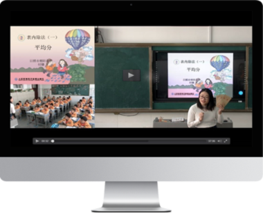
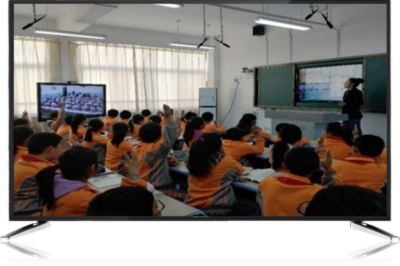

-
全自动录播系统
才宝全自动录播系统安装便捷，操作简单，实时采集教师、学生摄像机及VGA信号，后台静默编码生成视频文件，不影响正常的上课活动；系统支持三分屏自动录课模式，主画面镜头随师生活动情景实时跟踪、自动切换；亦可人工干预切换主画面或进行电影模式录制。保存的视频自带剪辑工具，可预览、剪辑，一站式完成，即录即传。
查看更多  -
同步课堂系统
才宝同步课堂系统通过互联网，可与本区域网络教研中心、学校进行同步互动，主讲人跟远程学员实时问答，两端学员亦可在线交流讨论。实现了远程音视频交互的全过程录播，包括主讲端及听课端画面的录制和直播，利于优质资源的共享使用。
查看更多  -
直播课堂系统
才宝直播课堂系统能够把教师课堂的板书、讲解、学生活动情景实况播出，授课教师一人即可切换任一画面，无需导播。通过联网，在区域云平台、pc端、移动端上均可收看。该系统多用于网络培训、学术报告、专题讲座、学校公开课、区域名师课等直播活动。
查看更多 -
校园电视台系统
才宝校园电视台系统可进行实际背景校园电台直播，可对现场、讲解内容遥控切换，无需他人导播，通过互联网，在学校平台、pc端、手机即可收看。该系统多用于空中课堂、培训讲座、专题报告、学校活动、家长会等活动。
查看更多 -
视频会议系统
才宝视频会议系统使用了多点互动功能：利用在线直播技术、webrtc在线语音视频聊天技术，实现的多终端同时在线互动功能，可以支持多个终端同时在线互动。多信源音视频混合编码，采集现场多路音视频源，一个终端在和讲课方互动的同时，其他终端也能实时观看整个互动过程。该系统多用于教学研究、党员培训、知识讲座、专题会议、区县校长会等活动。
查看更多 -
区域教育云平台
区域教育云平台的基本起点是人人通，要把所有相关的设备、课堂和人连起来，人人互联互动。在功能设计上要实现完备的业务系统，以“七横六纵”来概括，即横向实现市、区县、学校、班级、学生、家长、社会一体化；纵向至少包括教育管理、教学科研、课堂教学、教育创新、家庭教育、数字经济六条线。是将云计算、大数据、互联网等信息技术与教育教学深度融合的智慧教育云平台。
查看更多